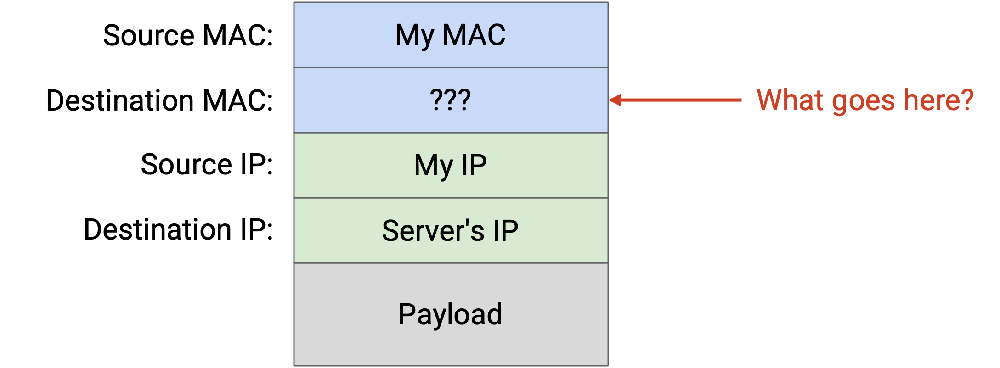
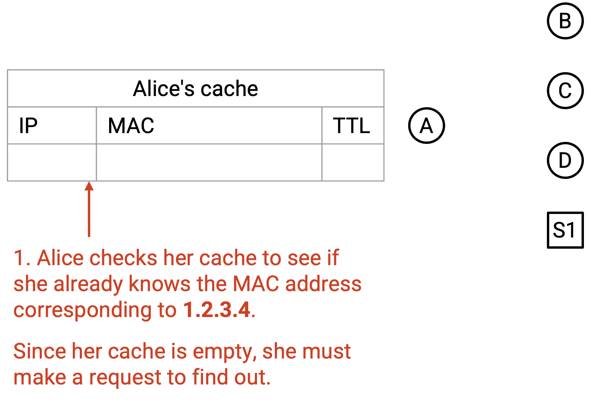
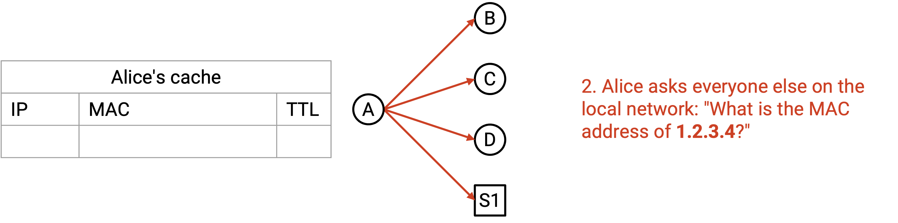
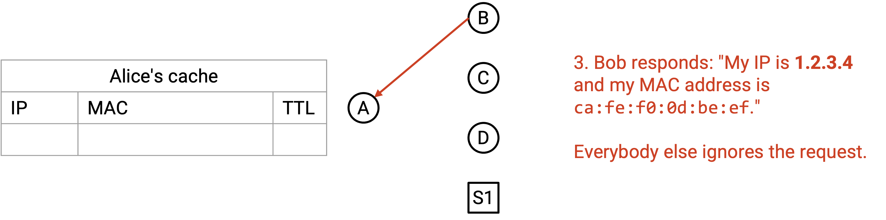
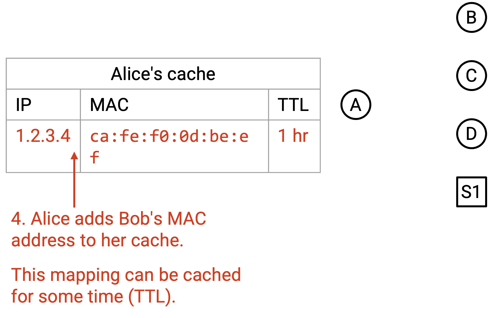
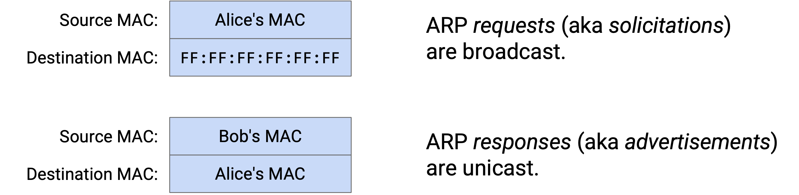
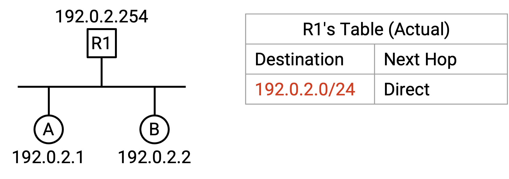
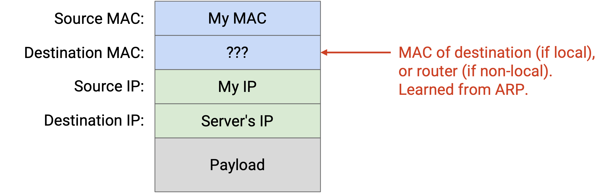
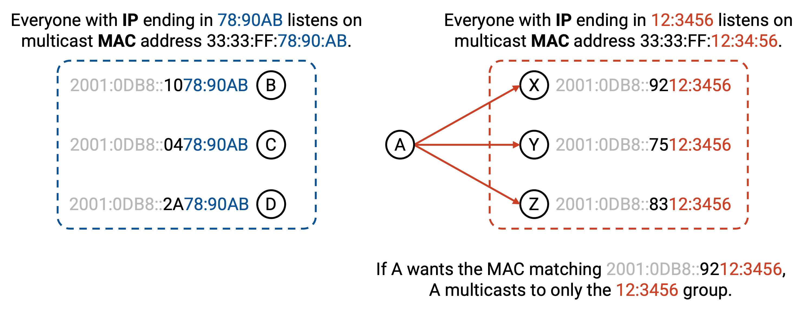

ARP: Connecting Layers 2 and 3
Connecting Layers 2 and 3
Recall that packets get additional headers wrapped around them as they move down the stack, to lower layers. To send an IP packet, we first fill in its destination IP at Layer 3. Then, we pass that packet down to Layer 2, where we have to add a MAC address to send the packet along the link. What MAC address do we add?

First, we need to check if the destination IP is somebody in our own local network, or somebody in a different local network. To determine this, the sender’s forwarding table will have an entry indicating the range of local IP addresses, sometimes called our subnet. For example, the entry might say that 192.0.2.0/24 is direct, which means all addresses between 192.0.2.0 and 192.0.2.255 are on the same local network. The table also has a default route, saying that all other non-local destinations should be forwarded to the router.
If the destination IP is in our subnet, we need some way to translate between the destination IP address and that machine’s corresponding MAC address. If the destination is outside our subnet, we need some way to translate the router’s IP address (from the forwarding table) to its corresponding MAC address, so we can send the packet to the router.
One naive solution is to broadcast every packet, so that the destination or router will definitely receive and process it. However, this is inefficient. It forces everyone to parse every packet (e.g. read the Layer 3 headers) to check if the packet is meant for them. Also, if the Layer 2 network has more than one link, the switches at Layer 2 have to flood the packet across all the links.
A better approach would be to translate the destination IP address to its corresponding MAC address (if local) or the router’s MAC address (if non-local), and unicast the packet at Layer 2.
ARP: Address Resolution Protocol
ARP (Address Resolution Protocol) allows machines to translate an IP address into its corresponding MAC address.
To request a translation, a machine can broadcast a soliciation message: “I have MAC address f8:ff:c2:2b:36:16. What is the MAC address of the machine with IP 192.0.2.1?”
All machines who are not this IP address ignore the message. The user who has this IP address unicasts a reply to the sender’s MAC address, saying ``I am 192.0.2.1, and my MAC address is a2:ff:28:02:f2:10.
Machines can also broadcast their own IP-to-MAC mapping to everybody, even if nobody asks.
When you receive an IP-to-MAC mapping, you can add it to your local ARP Table, which caches these mappings for the future. The table also includes an expiry date for each entry, since IP addresses aren’t permanently assigned to a computer. A different computer could get assigned the same IP address, or the same computer could change IP addresses. (TODO: interfaces?)
Step 1:

Step 2:

Step 3:

Step 4:

Note that ARP runs directly on Layer 2, so all packets are sent and received over Ethernet, not IP.

Connecting ARP and Forwarding Tables
Recall that in a router’s forwarding table, we would sometimes include an entry indicating that a host is directly connected to the router.
In reality, the router’s forwarding table contains a single entry, mapping the entire subnet’s range of IP addresses to be direct. If the router receives a packet whose destination is in this local range, the router runs ARP to find the corresponding MAC address, and uses Layer 2 to send the packet to the correct host on the link.

This also helps us in the case where multiple hosts are connected on the same link. In our conceptual picture, we’d say that Host A is directly connected on Port 1. Multiple hosts might be on that link, so by using ARP, we can create a Layer 2 packet that gets unicast to only Host A, and not other computers on the link.
Given a forwarding entry that maps a subnet like 192.0.2.0/24 as direct, how can we determine if a given IP address falls in that range? This is where it’s useful to write ranges using a netmask instead of slash notation. Recall that to write this range as a netmask, we set all fixed bits to 1 and all unfixed bits to 0, to get 255.255.255.0. Then the range is expressed as 192.0.2.0 with netmask 255.255.255.0.
Now, to check if an address is in the range, we perform a bitwise AND of the address and the netmask. This causes all unfixed lower bits to get zeroed out, retaining only the fixed upper bits. Then, we check if the result matches 192.0.2.0 (the first address in the range, where all unfixed bits are 0).
Note that as packets get forwarded across hops, the Layer 2 destination will change to the MAC address of the next hop, so that packets can travel across links. However, the Layer 3 destination stays the same across each hop.

Neighbor Discovery in IPv6
ARP translates IPv4 addresses to MAC addresses. To translate IPv6 addresses to MAC addresses, we use a similar protocol called neighbor discovery.
Instead of broadcasting the request for an IP-to-MAC translation, neighbor discovery instead multicasts the request to a specific group, and each computer listens on a specific group based on its IP address. For example, everyone with an IP address ending in 12:3456 might listen on the group MAC address 33:33:FF:12:34:56, while everyone with an IP address ending in 78:90AB might listen on the group MAC address 33:33:FF:78:90:AB.
If I want the MAC address corresponding to the user with an IPv6 address ending in 12:3456, I can plug those IPv6 bits into the group MAC address to get 33:33:FF:12:34:56, and I know that the user with that IP address must be listening to this group MAC address.

Some terminology: In the neighbor discovery protocol, the request for a mapping is called Neighbor Solicitation, and the reply containing the mapping is called Neighbor Advertisement.